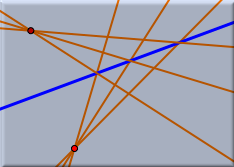
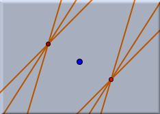
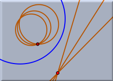

鏡映

- 「鏡」が直線の場合 は普通の意味での鏡映像が得られます。 ある点の鏡映像とは、鏡までの距離が等しく、鏡への垂線の足が同じような点のことです。
- 「鏡」が点の場合 は、この点を中心とする点対称な図形が描かれます。 ある点の点対称図形とは、中心となる点までの距離が等しく、中心と反対側にあるような点のことです。
- 「鏡」がユークリッド円の場合は、通称「円の反転像」と呼ばれる図形が描かれます。 ある点に関する円の反転像とは、円の中心を始点とし、もとの点を通る半直線上に乗っている点であって、円の中心から の距離が rの2乗/t で決まるような点のことです。 ここで、r とは円の半径、t とは円の中心と最初の点との距離です。
直線の鏡映像や、2次曲線の鏡映像とは、それぞれの図形に含まれるすべての点の鏡映が描くような図形のことを意味するとします。
 |  |  | ||
| 直線を軸にする鏡映 | 点を中心とする鏡映 | 円に対する鏡映 |
要約
最初に「鏡」になる要素を選択する。 その後に選択した要素の鏡映像を描く。注意
鏡映の定義は選択している幾何学に強く依存しています。こちらも参照してください
(阿原)
Page last modified on Tuesday 02 of August, 2011 [12:17:11 UTC].
The original document is available at
http://doc.cinderella.de/tiki-index.php?page=MirrorJ